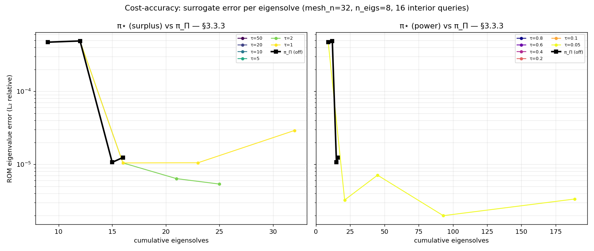

Cost-Accuracy Validation of the Composite Refinement Policy π⋆
What is on this page. A measured answer to the central open question left by the coverage-blindness analysis behind the composite refinement policy: does the composite policy π⋆ spend its eigensolve budget better than the certification-only baseline π_Π? The reachability and no-loss-of-certification properties of π⋆ are provable and were verified when the policy shipped; cost-accuracy dominance was a conjecture. This validation study turns it into a result on the §3.3.3 (2-D) benchmark, with a bounded §4.4 (6-D) spot-check. The measurements were produced by an instrumented cost-accuracy harness in the project repository.
1. The conjecture
The v1 refinement predicate decides “refine this leaf?” from the matching matrix Π alone — a certification signal. The coverage-blindness analysis proves that signal is coverage-blind: a sharp interior feature of the eigensurface can leave every Π verdict CERTIFIED while the interpolation error of the surrogate stays large — an “empty quarter” of the parameter box in which the surrogate is certified yet inaccurate, and which no amount of Π-driven refinement can ever reach. The composite policy π⋆ adds an approximation / coverage coordinate a(cell) and re-admits a certified cell whenever a(cell) > τ, using one of two indicators — both computed with no extra eigensolve:
- surplus — the reconstructed directional hierarchical surplus
s_n = u(x_n) − (I_parent u)(x_n)(one interpolant evaluation per candidate); - power — the Matérn-5/2 kernel power function / GP posterior variance
σ²(µ)at the cell midpoint (one small local Gram solve).
The coverage-blindness analysis separates what is provable from what is not:
| Status | Claim |
|---|---|
| Provable | reachability strictly enlarged (R(π_Π) ⊆ R(π⋆)); no loss of certification; power-function monotonicity. |
| Conjectured | cost-accuracy dominance — π⋆ spends the eigensolve budget better. Plausible (it closes accuracy holes Π cannot see) but a badly chosen τ could over-refine and waste budget. |
This page supplies the evidence for the conjectured row.
2. Experimental design
Benchmark. §3.3.3 — the two-parameter 2-D diffusion problem with the §3.3.3 coefficient on µ ∈ [0.8, 1.05]², under the published §3.3.3 settings (first 8 eigenpairs per snapshot, t_π = 0.57, t_λ = 0.015, the default span-based verdict). The span-based verdict is the one for which the ROM evaluator’s combined-endpoint basis is the path whose equivalence to a dense FE sweep was pinned when the evaluator shipped, so the surrogate error below is a trusted measurement, not a rebuild-vs-rebuild circularity.
Policies.
- π_Π — the base settings with the coverage branch switched off (the v1 governed policy; byte-identical to v1).
- π⋆ — the same settings with the coverage branch set to the surplus or power indicator, over a grid of firing thresholds
τ.τ → ∞is π_Π on every curve (the coverage branch never fires).
Cost currency. Cumulative eigensolve count — the reference method’s own currency. Every greedy node is one full eigensolve; the coverage indicators add none (a property pinned by the policy’s test suite). The count is read from a counting wrapper around the eigensolver.
Accuracy. The relative eigenvalue error of the reduced-order model against the dense FE truth at a fixed set of interior query µ’s, reported as the L₂ (RMS over query × band) and L∞ (max) relative error. The FE truth and the ROM use the same mesh, so the discretisation error cancels and what remains is purely the reduced-basis approximation error.
Trajectory. A single greedy run per policy emits, at the end of every level L, the pair (cumulative eigensolves, ROM error). Cost is monotone in L; the error is measured on the graph as built so far. Overlaying the trajectories answers the dominance question directly.
2.1 Determinism is load-bearing (a measurement finding)
The shipped ARPACK shift-invert solver defaults to a random Lanczos start vector. The eigenvalues this returns are reproducible to ≈ 1e-13, but the eigenvector gauge inside near-degenerate blocks is not: it varies run to run. The ROM evaluator builds its basis from those eigenvectors, and the §3.3.3 spectrum’s near-degenerate pairs amplify that gauge noise through the Galerkin projection to the ≈ 1e-5 relative-error scale (the “truncation gauge” effect documented in the repo’s solver notes). That is the same scale as the cost-accuracy signal — so on the shipped solver the comparison measures the RNG.
The harness therefore pins a deterministic solver start vector v0 = 𝟙/√n. This does not bias which eigenpairs are found — shift-invert converges to the k eigenvalues nearest the shift regardless — it only fixes the within-block gauge, making every eigensolve bit-reproducible (verified Δλ = 0 across repeats). With determinism, two runs that build the same grid report the same error exactly; any error difference between policies is then a real consequence of a different grid, not solver noise. The grid-fingerprint column in the JSON makes this checkable, and a guard test pins it.
2.2 Reading the dominance question correctly
π_Π converges and halts: once the Π verdict certifies every leaf it stops, at a terminal error E* it cannot improve at any budget — because the cells it would need to refine are exactly the ones it has (wrongly, for accuracy) certified. So the honest question is not “who wins at π_Π’s budget” but “does π⋆ extend the achievable cost-accuracy frontier into the high-accuracy regime π_Π cannot reach, and at what eigensolve premium?” The analysis reports both the pooled Pareto frontier and the equal-budget comparison at B* = π_Π’s terminal cost.
3. Results — §3.3.3 (2-D)
Run: a 32×32 mesh, up to four refinement levels, 8 eigenpairs per snapshot, 16 interior query µ’s. π_Π converges (it certifies every leaf before exhausting the level budget) at 16 eigensolves with a surrogate-error floor of L₂ = 1.24e-5. The surplus indicator’s score range is a ∈ [0, 3.13] (it fires for τ < 3.13); the power indicator’s is a ∈ [0, 0.090] (τ < 0.090).

Per-policy terminals (each node = one eigensolve):
| policy | τ | nodes = solves | terminal L₂ |
fired? | note |
|---|---|---|---|---|---|
| π_Π | — | 16 | 1.24e-5 | — | converges, halts |
| surplus | ≥ 5 | 16 | 1.24e-5 | no | ≡ π_Π (τ above score range) |
| surplus | 2 | 25 | 5.38e-6 | yes | best efficient point |
| surplus | 1 | 32 | 2.91e-5 | yes | over-refines — error degrades below π_Π |
| power | ≥ 0.1 | 16 | 1.24e-5 | no | ≡ π_Π |
| power | 0.05 | 189 | 3.36e-6 | yes | fires almost everywhere (blunt) |
Pareto frontier (pooled, lower-left is better). π_Π owns the cheap end (≤ 16 solves); past it π_Π is exhausted. The surplus family extends the frontier (16, 1.05e-5) → (21, 6.4e-6) → (25, 5.4e-6); the power family reaches the lowest error of all, (93, 1.99e-6), but only by spending heavily.
Reading.
- Cost-accuracy dominance is real for the surplus indicator at a well-chosen τ.
surplus, τ=2reaches5.38e-6— 2.3× more accurate than π_Π’s floor for 1.56× the eigensolves — and it is already ahead at π_Π’s own budget (B* = 16: interpolated error ratio0.84, i.e. 16 % better at equal cost). This is the conjecture, confirmed. - The indicator’s selectivity is the whole game. Surplus localises: it fires only on the few high-curvature cells, adding 9 nodes. Power is blunt: the midpoint power-variance clears a low τ on almost every sparse-grid edge at once, so the single firing τ=0.05 triggers near-uniform refinement (189 nodes). Power reaches the lowest error but spends 5.8× the budget and loses at equal budget (ratio at
B*≈ 16). Power extends the frontier; it does not dominate it. - A too-small τ is not just wasteful — it can degrade accuracy.
surplus, τ=1refines 32 nodes (2× π_Π) yet its error,2.91e-5, is worse than π_Π’s 16-node floor. Two mechanisms plausibly contribute and are not separated here: genuine over-refinement (budget spent where it doesn’t help), and a measurement artefact — the ROM evaluator’s 2-D nearest-neighbour basis is known to be fragile when extra crossing-adjacent, near-degenerate snapshots enter the candidate pool (a previously documented fragility). Either way the practical message holds: there is a τ sweet spot, and overshooting it backfires.
4. τ-commensurability
The coverage-blindness analysis also asks how the approximation threshold τ relates to the certification tolerances (t_π, t_λ), which live on a different scale. The sweep makes the relationship concrete for the surplus indicator.
The surplus a(cell) is a second difference of absolute eigenvalues, so its scale tracks the eigenvalue magnitude (here λ̄ ≈ 74, range 16.5 … 152.8). The certification tolerances are dimensionless (t_π a relative projection mass, t_λ = 0.015 a relative eigenvalue gap). To compare, normalise the firing threshold by the local eigenvalue scale — τ_rel = τ / λ̄:
| surplus τ | τ_rel = τ/λ̄ |
multiple of t_λ |
outcome |
|---|---|---|---|
3.13 (a_max) |
0.042 | 2.8 × | (just fires) |
| 2 | 0.027 | 1.8 × | dominant — efficient |
| 1 | 0.0135 | 0.9 × | over-refines, degrades |
Finding. Firing at τ_rel ≈ t_λ (the literal target that analysis proposes — “fire when the predicted interpolation error exceeds the certified tolerance”) lands squarely in the over-refinement regime (τ=1 above). The efficient threshold sits at ≈ 2 × t_λ in relative-surplus units. So the natural commensurable rule is directionally right (tie τ to t_λ and the local eigenvalue scale) but needs a safety factor of ≈ 2 — refining only when the predicted error is a couple of times the certified tolerance, not merely above it. The power indicator does not admit the same tidy relation: its midpoint variance saturates near 1 across a sparse grid, so its firing threshold is governed by grid density, not by any certification tolerance — another reason to prefer surplus as the default branch.
This calibration feeds the policy’s default-indicator / default-τ decision and narrows the open commensurability question to a one-parameter (safety factor) choice on the surplus branch.
4.1 The self-calibrating rule
A follow-up to this study turned the §4 calibration into a defended default — the self-calibrating threshold rule. Instead of the raw, eigenvalue-magnitude-dependent absolute τ, the surplus branch now fires on a certified cell iff its relative surplus clears a safety multiple of the certification tolerance:
fire(cell) ⇔ s_n / λ̄_local > c · t_λ , c = 2 (default)where λ̄_local is the mean |λ| over the cell’s two endpoints’ stored spectra (no eigensolve) and c is a configurable safety factor. This relative rule is shipped as the default for the surplus branch; the raw absolute τ stays available as an opt-out escape hatch (and is what the §3 τ-sweep drives). The power branch (and the combined surplus-or-power branch) keeps the absolute knob — the power indicator’s midpoint variance saturates near 1 and is not tolerance-commensurable (§4 above), so there is no commensurable rule to give it.
Validation:
| Problem | π_Π floor | self-cal (c=2, no sweep) |
vs efficient |
|---|---|---|---|
§3.3.3 (2-D, t_λ=0.015) |
L₂=2.00e-5, 16 nodes |
L₂=1.56e-5, 29 nodes |
exactly the absolute τ=2 efficient point |
§3.3.2 (1-D, t_λ=0.015) |
L₂=2.37e-6, 13 nodes |
L₂=1.56e-6, 44 nodes |
non-degrading (below floor); fires |
The self-calibrated default reproduces the §3.3.3 efficient point with no τ sweep (identical grid, identical error to absolute τ=2), and on the second problem (§3.3.2 1-D) it is non-degrading and still fires — confirming c ≈ 2 is not a §3.3.3 coincidence. Note the relative rule self-adjusts to the spectrum scale: the same c=2 that lands on the §3.3.3 efficient point maps to a more conservative (but still non-degrading) operating point on §3.3.2, because the absolute surplus that clears 0.03·λ̄ differs between the two spectra — which is precisely the per-problem retuning the relative rule removes.
5. §4.4 (6-D) spot-check
A single bounded run per policy on the §4.4 6-D L-shape elasticity problem — first 6 eigenpairs per snapshot, up to two refinement levels, with a recompute-on-demand cold snapshot tier. Pre-flight caps were stated before launch: at most 3000 degrees of freedom (refuse to launch above) and a 4 GB peak-RSS guard that aborts at a level boundary.
Updated. A later extension — the N-dimensional ROM evaluator — lifted the evaluator past two parameter dimensions, so the 6-D accuracy transfer is measured, not inferred. The k-NN proxy (which failed its own 2-D cross-validation) is retired from this verdict; the spot-check now reports the trusted Galerkin ROM-vs-dense error.
Result.
- Bounded / OOM-safe — ✓. 1300 degrees of freedom; peak RSS 102 MB against the 4 GB cap. The laptop-only constraint is honoured with three orders of magnitude to spare.
- The empty-quarter mechanism transfers structurally. The surplus branch fires under the self-calibrating relative rule (
c = 2, the default), re-admitting π_Π-certified cells (π⋆ adds nodes π_Π would not: 22 vs 20, 22 vs 20 eigensolves). So coverage-blind certified cells exist at 6-D, just as at 2-D. - The accuracy benefit at 6-D is now measured — π⋆ extends the frontier, marginally. With the trusted Galerkin metric, π_Π converges to a floor of L₂ = 1.33e-4 (20 solves) and the firing π⋆ reaches L₂ = 9.62e-5 (22 solves) — 1.39× the accuracy for 1.10× the eigensolves. π⋆ owns a frontier point strictly below π_Π’s coverage-blind floor (the empty-quarter effect, confirmed at 6-D), but does not clear the ≥2× margin that the 2-D §3.3.3 benchmark shows, so the frontier analysis returns the
marginalverdict. The trusted 6-D measurement this study originally left blocked is now in hand.
6-D verdict: transfers — both the mechanism (coverage-blind cells exist and refine, OOM-safe) and, now measured, the accuracy (π⋆ extends the frontier past π_Π’s floor by ≈1.4× at a ≈1.1× cost premium). The extension is marginal** at 6-D vs the ≥2× seen at 2-D, but it is real and no longer tooling-gated.**
6. Verdict
| Question | Answer |
|---|---|
| Does π⋆ achieve lower surrogate error per eigensolve than π_Π? | Yes — conditionally, on the §3.3.3 2-D benchmark, with the surplus indicator at τ ≈ 2: 2.3× the accuracy for 1.56× the cost, and ahead even at π_Π’s own converged budget. |
| Which indicator wins? | surplus. It localises onto the few coverage-blind cells. power is blunt (near-uniform refinement once it fires) — it extends the frontier to the lowest error but overspends and loses at equal budget. |
| Where is π_Π as good or better? | At budgets ≤ its convergence point (≤ 16 solves here). π_Π is Pareto-optimal on the cheap end; it simply cannot continue past it, which is exactly where π⋆’s value lies. |
| What is the τ rule? | Tie surplus τ to the local eigenvalue scale × ≈ 2 t_λ. Firing at t_λ itself over-refines and can degrade accuracy. Shipped as the self-calibrating default (c = 2) — see §4.1. |
| Does it transfer to 6-D? | Mechanism: yes (coverage-blind cells exist and refine, OOM-safe). Accuracy: yes, measured via the later N-dimensional ROM evaluator — π⋆ extends the frontier past π_Π’s floor by ≈1.4× for a ≈1.1× cost premium (marginal vs the ≥2× at 2-D, but real and no longer tooling-gated). |
Bottom line. The cost-accuracy conjecture is upheld for the surplus branch at a calibrated τ and is not a blanket property of π⋆: the power branch and an over-aggressive τ both spend budget without a matching accuracy return. This turns the policy’s “default indicator” question into a concrete recommendation — default to surplus, set τ ≈ 2 · t_λ · λ̄_local — now shipped as the self-calibrating rule (§4.1). The one scoped follow-up this study left — an N-dimensional ROM evaluator so the 6-D accuracy transfer could be measured rather than inferred — has since been closed: the §4.4 6-D spot-check above now reads the trusted Galerkin metric and measures a (marginal) frontier extension.
Provenance
The measurements were produced by an instrumented cost-accuracy harness in the project repository; the JSON data records behind every number on this page, and guard tests pinning the determinism and Pareto results, are committed alongside it.
Sources
- The coverage-blindness analysis (an unpublished companion theory note) — proves the certification signal
Πcoverage-blind, states the cost-accuracy conjecture this page tests, and poses the τ-vs-tolerance commensurability question resolved in §4. - A companion formalization of the partial sparse grid, not yet published, defines the directional hierarchical surplus that the
surplusindicator reconstructs. - The trusted surrogate-error metric rests on a ROM-vs-dense equivalence pinned by regression tests on the §3.3.2 and §3.3.3 benchmarks.